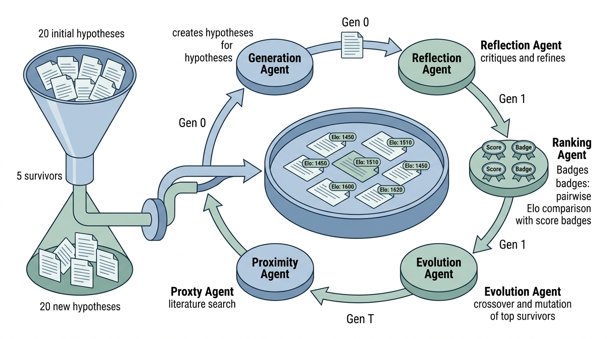

Prerequisites
This section builds on the AI scientist architectures from Section 53.2. Familiarity with the multi-agent debate and ranking patterns from Chapter 17 and the Coscientist overview from Section 40.2 will provide useful context. For the safety architecture discussion, the experiment design principles from Chapter 46 are relevant.
The AI Scientist and FunSearch systems from Section 53.2 operate entirely in silicon: their experiments are code executions. This section examines two systems that bridge the gap between computational and physical science. Coscientist (Nature 2023) controls actual laboratory hardware to execute chemical syntheses autonomously. Google's AI Co-Scientist (2025) generates biomedical hypotheses through multi-agent debate and evolution, then hands promising candidates to human scientists for wet-lab validation. Together, these systems illustrate two strategies for extending AI scientists beyond ML: direct hardware integration and computational hypothesis generation with human experimental execution.
1. Coscientist: LLM-Driven Autonomous Chemistry
What happens when you hand a large language model the keys to a chemistry lab, complete with a liquid-handling robot, a shelf of reagents, and no human standing over its shoulder? Coscientist (Boiko et al., 2023) answered that question: the system autonomously planned and executed Suzuki and Sonogashira cross-coupling reactions (where a palladium catalyst joins two molecular fragments by forming a new carbon-carbon bond), two foundational organic chemistry transformations, without human intervention during execution.
Coscientist is a closed-loop autonomous chemistry platform. A large language model serves as the central controller for the entire wet-lab workflow: reading the literature, planning a synthesis protocol, writing robot control code, running the experiment on physical hardware, and interpreting the results. This matters because Coscientist is the first system to replace the iterative human cycle of "design, execute, analyze, redesign" for real chemical reactions, compressing days of manual effort into hours of unattended operation. The core mechanism is tool-augmented prompting. GPT-4 receives the experimental goal as a prompt, then selects from five tools (web search, documentation lookup, code execution, hardware control, and an experiment planner) in a ReAct-style loop until it meets the goal. Use Coscientist-style direct hardware integration when you have a well-characterized reaction class with established safety profiles and robotic equipment. For domains where the experimental space is too broad or the apparatus too varied for a single robot, the hypothesis-generation approach of AI Co-Scientist (Section 2 below) fits better.
1.1 Architecture
Coscientist uses GPT-4 as its central reasoning engine, augmented with five specialized tools. Figure 53.3 illustrates how these tools connect to the central LLM and how experimental results flow back for iterative refinement.
- Web Search. Searches the internet for chemical procedures, safety data sheets, and reaction conditions. The LLM formulates search queries and interprets results.
- Documentation Lookup. Queries technical documentation for the specific hardware and reagents available in the lab. This grounds the system in what it can actually do, preventing it from proposing reactions that require unavailable equipment.
- Code Execution. Runs Python code for calculations (stoichiometry (calculating the exact quantities of each reagent needed based on the balanced chemical equation), dilution factors, timing schedules) and data analysis (spectral interpretation, yield calculation).
- Hardware Control. Sends commands to the Opentrons OT-2 liquid-handling robot. The system generates Python scripts using the Opentrons API that specify which reagents to pipette, in what quantities, at what temperatures, and in what sequence. (As of 2024, the Opentrons Flex platform offers higher throughput and a larger deck than the OT-2; newer autonomous chemistry projects increasingly adopt Flex, though the OT-2 remains widely deployed.)
- Experiment Planner. An internal reasoning module that decomposes a high-level goal ("perform a Suzuki coupling of aryl halide X with boronic acid Y") into a step-by-step experimental protocol.
1.2 The Experiment Loop
Coscientist's experiment loop differs from the purely computational loop of Section 53.1 in a critical way: the "run" phase involves physical actions that cannot be undone. If the system dispenses the wrong reagent, there is no "undo" button. This asymmetry between computational and physical experiments drives the entire safety architecture.
The loop proceeds as follows:
- The user provides a high-level goal: "Optimize the Suzuki coupling of 4-iodoanisole with phenylboronic acid."
- Coscientist searches the web and documentation for known reaction conditions.
- The experiment planner generates a protocol with specific reagent quantities, temperatures, and timing.
- The LLM generates an Opentrons Python script implementing the protocol.
- The script executes on the robot. The system monitors for errors (failed aspirations, temperature deviations).
- Results (yield, purity) are measured and fed back to the LLM.
- The LLM decides whether to modify conditions and repeat, or to report final results.
In their demonstration, Coscientist optimized a Suzuki coupling reaction across six iterations. Starting from literature-standard conditions (Pd catalyst, K2CO3 base, 80 degrees C, 12 hours), the system tested variations in catalyst loading (0.5 mol% to 5 mol%), base equivalents (1.5 to 3.0), temperature (60 to 100 degrees C), and reaction time (2 to 24 hours). After six rounds, it converged on conditions yielding 94% isolated product: 2 mol% Pd, 2.0 equivalents K2CO3, 80 degrees C, 6 hours. The total optimization required approximately 18 hours of robot time and zero human intervention during execution.
1.3 Safety Architecture
Coscientist implements three layers of safety:
- Chemical safety database. Before executing any protocol, the system checks all proposed reagents against a safety database (Globally Harmonized System (GHS) classifications, incompatibility tables). Reactions involving highly toxic, explosive, or pyrophoric reagents (substances that ignite spontaneously on contact with air) are blocked automatically.
- Hardware limits. The Opentrons robot has physical constraints (maximum volume, temperature range, compatible labware) that prevent certain dangerous operations mechanically, regardless of software commands.
- Human review gate. Before the first execution of any new protocol, a human chemist reviews the generated script. Subsequent iterations of the same protocol type (parameter tweaks within pre-approved ranges) can proceed autonomously.
The following code shows how a safety check layer can be implemented for a lab automation system.
from dataclasses import dataclass
from enum import Enum
class HazardLevel(Enum):
NONE = 0
LOW = 1 # standard lab precautions
MODERATE = 2 # fume hood required
HIGH = 3 # specialized training required
BLOCKED = 4 # not permitted for autonomous use
@dataclass
class Reagent:
name: str
cas_number: str
hazard_level: HazardLevel
ghs_codes: list[str]
max_volume_ml: float # maximum per single operation
incompatible_with: list[str] # CAS numbers
class SafetyChecker:
"""Pre-execution safety validation for lab protocols."""
def __init__(self, reagent_db: dict[str, Reagent]):
self.reagent_db = reagent_db # keyed by CAS number
def check_protocol(
self, steps: list[dict]
) -> dict:
"""Validate a protocol before execution.
Each step dict has 'reagent_cas', 'volume_ml',
'temperature_c', and 'action' keys.
Returns dict with 'approved', 'warnings', and
'blockers'.
"""
warnings = []
blockers = []
all_reagents_used = set()
for i, step in enumerate(steps):
cas = step["reagent_cas"]
reagent = self.reagent_db.get(cas)
if reagent is None:
blockers.append(
f"Step {i+1}: Unknown reagent CAS {cas}. "
"Cannot verify safety."
)
continue
# Check hazard level
if reagent.hazard_level == HazardLevel.BLOCKED:
blockers.append(
f"Step {i+1}: {reagent.name} is blocked "
"for autonomous operation."
)
elif reagent.hazard_level == HazardLevel.HIGH:
warnings.append(
f"Step {i+1}: {reagent.name} requires "
"specialized handling. Human review needed."
)
# Check volume limits
if step["volume_ml"] > reagent.max_volume_ml:
blockers.append(
f"Step {i+1}: {step['volume_ml']} mL of "
f"{reagent.name} exceeds limit "
f"({reagent.max_volume_ml} mL)."
)
# Check incompatibilities
for other_cas in all_reagents_used:
if other_cas in reagent.incompatible_with:
other = self.reagent_db[other_cas]
blockers.append(
f"Step {i+1}: {reagent.name} is "
f"incompatible with {other.name}."
)
# Check temperature limits
temp = step.get("temperature_c", 25)
if temp > 200:
blockers.append(
f"Step {i+1}: Temperature {temp} C "
"exceeds equipment limit."
)
elif temp > 100:
warnings.append(
f"Step {i+1}: High temperature ({temp} C). "
"Verify labware compatibility."
)
all_reagents_used.add(cas)
return {
"approved": len(blockers) == 0,
"warnings": warnings,
"blockers": blockers,
}
2. Google AI Co-Scientist: Hypothesis Generation at Scale
Coscientist proves that an LLM can close the loop between planning and physical execution, but its scope is deliberately narrow: one reaction class, one robot, one lab. What if the goal is not to optimize a known reaction but to propose entirely new scientific hypotheses across broad domains where no single robot can run the experiments?
Google's AI Co-Scientist (Gottweis et al., 2025) takes a fundamentally different approach. Rather than executing experiments, it generates and refines hypotheses through a multi-agent system inspired by evolutionary computation. The system then hands promising hypotheses to human domain experts for experimental validation. In short: one system closes the loop with a robot arm; the other closes it with a tournament of ideas, and both still need the physical world to say yes or no.
Common Misconception
A common misconception is that systems like Coscientist and AI Co-Scientist operate as fully autonomous replacements for human scientists. In reality, both systems require substantial human involvement: Coscientist needs a human chemist to approve novel protocol types before first execution, and AI Co-Scientist produces hypotheses that humans must validate through wet-lab experiments. These are augmentation tools that automate specific phases of the scientific workflow (protocol optimization, hypothesis generation), not end-to-end replacements for scientific judgment.
2.1 Agent Architecture
AI Co-Scientist uses five specialized agent types, each implemented as a prompted Gemini model with different instructions and tools:
- Generation Agent. Produces initial hypotheses given a research goal and background context. Uses literature retrieval (similar to PaperQA2) to ground hypotheses in existing knowledge. Each hypothesis is a structured object with a claim, supporting evidence, proposed experiments, and predicted outcomes.
- Reflection Agent. Critically examines each hypothesis for logical consistency, feasibility, and alignment with known science. Functions as an internal reviewer, similar to the critique phase in Section 53.1's research loop. The reflection agent can request revisions from the generation agent.
- Ranking Agent. Scores hypotheses on multiple dimensions (novelty, testability, potential impact, feasibility) and produces a ranked list. Uses pairwise comparison via Elo rating, where each hypothesis carries a numerical score (initialized at 1500) that rises or falls after head-to-head comparisons, rather than absolute scoring, to reduce calibration bias.
- Evolution Agent. Takes the top-ranked hypotheses and produces variations: combinations of two hypotheses, extensions with additional variables, specializations to specific sub-problems. This is analogous to crossover and mutation in genetic algorithms. The evolved hypotheses re-enter the pool for reflection and ranking.
- Proximity Agent. Searches for related work that supports or contradicts each hypothesis. Unlike the generation agent's initial literature search, the proximity agent performs targeted searches after the hypothesis has been refined through multiple rounds of debate. It identifies both supporting evidence and potential falsifiers. Figure 53.3.1 illustrates AI Co-Scientist multi-agent tournament selection cycle.

Checkpoint
So far: AI Co-Scientist distributes hypothesis work across five specialized agents, where a generation agent proposes candidates, a reflection agent critiques them, a ranking agent scores them via pairwise Elo comparison, an evolution agent breeds new variants from top survivors, and a proximity agent injects external literature evidence.
Figure 53.4 shows how these five agents interact in a cyclic tournament. The generation agent seeds the pool; the reflection agent critiques each entry; the ranking agent scores survivors via pairwise Elo comparison; the evolution agent breeds new candidates from the top scorers; and the proximity agent injects external evidence at each generation.
The core mechanism of AI Co-Scientist is iterative debate between the generation and reflection agents. The generation agent proposes; the reflection agent critiques; the generation agent revises. This cycle repeats until the reflection agent cannot find further issues, or until a maximum iteration count is reached. The debate mechanism produces higher-quality hypotheses than single-pass generation because the reflection agent catches errors, inconsistencies, and unsupported claims that the generation agent would otherwise propagate. This is the same multi-agent debate pattern from Chapter 17, applied to scientific hypothesis generation rather than software design.
Mental Model
Think of tournament selection for hypotheses as a cooking competition with multiple rounds. In each round, a panel of judges (the ranking agent) tastes every dish (hypothesis) in blind pairwise matchups and updates a leaderboard. The bottom-ranked cooks are eliminated, and the survivors are told to create new dishes by combining their best recipes: take the sauce from dish A and the protein from dish B (the evolution agent's crossover). Before each round, a food critic (the reflection agent) privately reviews every plate and sends it back to the kitchen for fixes. After ten rounds of this cycle, the dishes that remain have been pressure-tested against every other entry and refined through repeated critique, producing far better results than any single chef working alone could manage.
2.2 Tournament Selection
Without a mechanism to cull weak candidates, a system that generates twenty hypotheses per round would leave scientists buried in undifferentiated proposals, unable to separate genuine insight from plausible-sounding noise. Tournament selection solves this by forcing every hypothesis to prove itself head-to-head before it can survive to the next generation.
AI Co-Scientist borrows tournament selection from evolutionary computation to manage its hypothesis pool. The process works as follows:
- The generation agent produces \(N\) initial hypotheses (typically \(N = 20\)).
- The reflection agent reviews each hypothesis, producing a refined version.
- The ranking agent scores all \(N\) hypotheses using pairwise Elo comparison.
- The top \(k\) hypotheses (typically \(k = 5\)) survive to the next round.
- The evolution agent produces \(N - k\) new hypotheses by combining and mutating the survivors.
- Steps 2 through 5 repeat for \(T\) generations (typically \(T = 10\)).
The Elo rating for each hypothesis \(h_i\) is updated after each pairwise comparison:
$$ E_i' = E_i + K \cdot (S_{ij} - P_{ij}) $$where \(E_i\) is the current Elo rating of hypothesis \(h_i\), \(S_{ij} \in \{0, 0.5, 1\}\) is the actual outcome of comparing \(h_i\) to \(h_j\) (as judged by the ranking agent), \(P_{ij} = 1 / (1 + 10^{(E_j - E_i)/400})\) is the expected outcome, and \(K\) is the update constant (typically \(K = 32\)).
The following code implements the tournament selection loop.
import random
from dataclasses import dataclass, field
@dataclass
class Hypothesis:
"""A scientific hypothesis with metadata."""
claim: str
evidence: list[str]
proposed_experiments: list[str]
elo_rating: float = 1500.0
generation: int = 0
parent_ids: list[str] = field(default_factory=list)
id: str = ""
def __post_init__(self):
if not self.id:
self.id = f"hyp_{random.randint(10000, 99999)}"
class TournamentSelector:
"""Evolutionary tournament selection for hypotheses."""
def __init__(
self,
pool_size: int = 20,
survivors: int = 5,
generations: int = 10,
k_factor: float = 32.0,
):
self.pool_size = pool_size
self.survivors = survivors
self.generations = generations
self.k_factor = k_factor
def pairwise_compare(
self,
h1: Hypothesis,
h2: Hypothesis,
rank_fn,
) -> tuple[float, float]:
"""Compare two hypotheses and update Elo ratings.
rank_fn(h1, h2) returns the winner: 1.0 for h1,
0.0 for h2, 0.5 for tie.
"""
expected_h1 = 1.0 / (
1.0 + 10 ** ((h2.elo_rating - h1.elo_rating) / 400)
)
actual = rank_fn(h1, h2)
h1.elo_rating += self.k_factor * (actual - expected_h1)
h2.elo_rating += self.k_factor * (
(1.0 - actual) - (1.0 - expected_h1)
)
return h1.elo_rating, h2.elo_rating
def run_tournament(
self,
pool: list[Hypothesis],
rank_fn,
evolve_fn,
reflect_fn,
) -> list[Hypothesis]:
"""Run the full tournament selection loop.
rank_fn(h1, h2) -> float: pairwise comparison
evolve_fn(parents) -> Hypothesis: create offspring
reflect_fn(h) -> Hypothesis: critique and refine
"""
for gen in range(self.generations):
# Reflection pass
pool = [reflect_fn(h) for h in pool]
# Pairwise ranking (sample pairs for efficiency)
n_comparisons = len(pool) * 3
for _ in range(n_comparisons):
i, j = random.sample(range(len(pool)), 2)
self.pairwise_compare(
pool[i], pool[j], rank_fn
)
# Selection: keep top survivors
pool.sort(
key=lambda h: h.elo_rating, reverse=True
)
survivors = pool[: self.survivors]
# Evolution: generate offspring
offspring = []
while len(offspring) < self.pool_size - self.survivors:
parents = random.sample(
survivors, min(2, len(survivors))
)
child = evolve_fn(parents)
child.generation = gen + 1
child.parent_ids = [p.id for p in parents]
offspring.append(child)
pool = survivors + offspring
# Final ranking
pool.sort(key=lambda h: h.elo_rating, reverse=True)
return pool
The tournament selection above manages the hypothesis pool, but each agent (generation,
reflection, ranking, evolution, proximity) is a separate LLM-backed function. The
OpenAI Agents SDK
provides typed handoffs between agents with built-in tracing, reducing the orchestration
code from ~200 lines to ~60. Define each agent with its own system prompt and tools,
then use Runner.run() with handoff triggers to route hypotheses between
agents. The SDK's built-in tracing records every agent call, which is essential for
debugging why a promising hypothesis was rejected or a weak one survived.
2.3 Validation Results
AI Co-Scientist was validated across three biomedical domains:
- Drug repurposing for acute myeloid leukemia (AML). The system identified existing drugs that could be repurposed for AML treatment. Domain experts reported that several predictions aligned with unpublished experimental findings, suggesting the system can rediscover results independently.
- Novel antimicrobial targets. The system proposed mechanisms for antibiotic resistance in bacteria. Some predictions were validated through wet-lab experiments, demonstrating the system's ability to generate testable, experimentally confirmed hypotheses.
- Rare disease mechanisms. For rare genetic diseases with limited literature, the system proposed pathogenic mechanisms that experts found plausible and worth investigating.
3. Comparing Coscientist and AI Co-Scientist
These two systems represent opposite ends of the physical integration spectrum, as Table 53.3 summarizes:
| Dimension | Coscientist | AI Co-Scientist |
|---|---|---|
| Domain | Synthetic chemistry | Biomedical research |
| Physical integration | Direct hardware control | None (hypothesis only) |
| Experiment execution | Autonomous (robot) | Human scientists |
| Feedback loop | Minutes (within run) | Weeks to months (wet-lab) |
| Safety model | Pre-execution checks + hardware limits | Human review of hypotheses |
| Quality mechanism | Iterative optimization | Multi-agent debate + evolution |
| Scaling bottleneck | Robot throughput | Human validation capacity |
| Publication | Nature 2023 | Google DeepMind report, 2025 |
Both systems ultimately depend on physical experiments for validation, but they differ in who executes those experiments. Coscientist's tight loop (generate protocol, execute on robot, analyze results, iterate) enables rapid optimization within a narrow domain. AI Co-Scientist's loose loop (generate hypothesis, hand to human, wait for results) enables broader exploration across domains where robotics cannot yet operate, but the human validation step creates a bottleneck that limits iteration speed. The self-driving laboratories of Chapter 55 aim to close this gap by extending Coscientist's approach to more complex experimental workflows.
4. Safety Architectures for Physical-World AI Scientists
The comparison above highlights a shared dependency: regardless of whether a robot or a human runs the experiment, both systems must ensure that proposed protocols do not cause harm. For Coscientist, that concern is immediate and physical; for AI Co-Scientist, it surfaces when human teams act on generated hypotheses.
When an AI scientist controls physical equipment, safety requirements escalate dramatically. A bug in an ML experiment wastes GPU hours; a bug in a chemistry experiment can cause fires, toxic releases, or equipment destruction. We organize the safety architecture into four layers, each catching failures that slip through the layer above.
- Semantic validation. Before generating any protocol, verify that the proposed experiment is chemically (or physically) sensible. Does the reaction have literature precedent? Are the proposed conditions (temperature, pressure, concentration) within known safe ranges? This layer is implemented as a prompted LLM call with access to a safety database.
- Computational simulation. Before physical execution, simulate the experiment computationally. For chemistry, this means reaction energy calculations (density functional theory (DFT), where quantum mechanical equations approximate the electronic structure of molecules to predict reaction energies, or semi-empirical methods) to check for exothermic runaway (an uncontrolled temperature spike from heat-releasing reactions). For robotics, this means kinematic simulation to check for collisions. See Chapter 43 for simulation methods.
- Hardware interlocks. Physical safety systems that cannot be overridden by software: temperature cutoffs, pressure relief valves, emergency stops. These provide a hard floor below which no software failure can cause harm.
- Human oversight. For novel protocol types (not previously approved), a human expert reviews the protocol before first execution. For approved protocol types with parameter variations within pre-approved ranges, autonomous execution is permitted.
from enum import Enum
from dataclasses import dataclass
class ApprovalStatus(Enum):
AUTO_APPROVED = "auto_approved"
NEEDS_REVIEW = "needs_review"
BLOCKED = "blocked"
@dataclass
class SafetyGateResult:
status: ApprovalStatus
layer: str
message: str
class FourLayerSafetyGate:
"""Four-layer safety gate for physical experiments."""
def __init__(
self,
safety_db,
simulator,
approved_protocol_types: set[str],
):
self.safety_db = safety_db
self.simulator = simulator
self.approved_types = approved_protocol_types
def evaluate(
self, protocol: dict
) -> list[SafetyGateResult]:
"""Run all four safety layers on a protocol.
Returns a list of results; execution proceeds only
if no result has status BLOCKED and at most one has
NEEDS_REVIEW.
"""
results = []
# Layer 1: Semantic validation
for reagent in protocol.get("reagents", []):
hazards = self.safety_db.lookup(reagent["cas"])
if hazards.is_blocked:
results.append(SafetyGateResult(
status=ApprovalStatus.BLOCKED,
layer="semantic",
message=(
f"{reagent['name']} is prohibited "
"for autonomous use."
),
))
elif hazards.requires_review:
results.append(SafetyGateResult(
status=ApprovalStatus.NEEDS_REVIEW,
layer="semantic",
message=(
f"{reagent['name']} requires human "
"safety review."
),
))
# Layer 2: Computational simulation
sim_result = self.simulator.check_exotherm(protocol)
if sim_result.max_temp_c > 300:
results.append(SafetyGateResult(
status=ApprovalStatus.BLOCKED,
layer="simulation",
message=(
f"Predicted exotherm: {sim_result.max_temp_c} C "
"exceeds equipment rating."
),
))
elif sim_result.max_temp_c > 150:
results.append(SafetyGateResult(
status=ApprovalStatus.NEEDS_REVIEW,
layer="simulation",
message=(
f"Predicted temperature {sim_result.max_temp_c} C "
"warrants human review."
),
))
# Layer 3: Hardware interlocks (informational)
results.append(SafetyGateResult(
status=ApprovalStatus.AUTO_APPROVED,
layer="hardware",
message="Hardware interlocks active (independent).",
))
# Layer 4: Protocol type approval
ptype = protocol.get("protocol_type", "unknown")
if ptype not in self.approved_types:
results.append(SafetyGateResult(
status=ApprovalStatus.NEEDS_REVIEW,
layer="oversight",
message=(
f"Protocol type '{ptype}' not pre-approved. "
"Human review required."
),
))
else:
results.append(SafetyGateResult(
status=ApprovalStatus.AUTO_APPROVED,
layer="oversight",
message=f"Protocol type '{ptype}' pre-approved.",
))
return results
def can_proceed(
self, results: list[SafetyGateResult]
) -> bool:
"""Check if a protocol can proceed to execution."""
return all(
r.status != ApprovalStatus.BLOCKED
for r in results
)
Suppose the AI scientist proposes a Grignard reaction (where an organomagnesium compound reacts with a carbonyl substrate to form a new carbon-carbon bond) at elevated temperature. Layer 1 (semantic) approves: Grignard reactions are well-characterized. Layer 2 (simulation) flags a warning: the predicted exotherm reaches 180 degrees C, above the normal operating range but below equipment limits. Layer 3 (hardware) is always active and does not differentiate. Layer 4 (oversight) checks the protocol type: if "Grignard_standard" is in the approved set, it auto-approves; if "Grignard_high_temp" is not, it requests human review. The system routes the protocol to a human chemist with the simulation warning attached. The chemist approves with a modified temperature ramp, and "Grignard_high_temp" is added to the approved set for future runs. This progressive approval model lets the system become more autonomous over time while maintaining safety.
Research Frontier
ORGANA (Darvish et al., 2024) extends the Coscientist paradigm by adding multimodal perception: the system uses camera vision to observe the physical state of reactions in progress (color changes, precipitate formation, phase separation) and adjusts its protocol in real time. Published at ICML 2024, ORGANA demonstrated that visual feedback enables an LLM-driven lab agent to handle tasks requiring qualitative judgment, such as titrating to a color endpoint, that purely command-based systems like Coscientist cannot manage. This points toward a future generation of lab agents that combine Coscientist's closed-loop hardware control with continuous sensory perception, narrowing the gap between what a human chemist can observe and what an autonomous system can react to.
Try It: Build a Hypothesis Tournament
Implement a miniature version of AI Co-Scientist's tournament selection using any LLM API. (1) Pick a narrow research question you find interesting (for example, "What dietary interventions most effectively reduce LDL cholesterol?"). (2) Prompt the LLM to generate 10 distinct one-paragraph hypotheses addressing the question, each with a testability statement. (3) Write a Python script that takes every pair of hypotheses (45 pairs for 10 hypotheses) and prompts the LLM to judge which is stronger, then updates Elo ratings using the formula from Section 2.2. (4) Keep the top 3 hypotheses by Elo, prompt the LLM to create 7 new hypotheses by combining or extending the survivors, and run another round of pairwise ranking. (5) After 3 generations, compare the final top-ranked hypothesis against the original top-ranked hypothesis from round one. You will typically find that the evolved hypothesis is more specific, better grounded, and more testable, illustrating why multi-round selection outperforms single-pass generation.
Exercise 53.3.1
Coscientist's safety checker validates reagent incompatibilities by comparing each new reagent against all previously used reagents in the protocol. If a protocol has \(n\) steps, each using a distinct reagent, how many incompatibility checks does the system perform in total? Write the closed-form expression, then calculate the number for a 12-step protocol. Now consider: the current implementation (Listing 53.5) stores used reagents in a set and checks each new reagent against all members. Could a false sense of safety arise if two reagents are individually compatible with everything already in the vessel but incompatible with each other only when a third reagent is also present? Describe one concrete chemical scenario where pairwise checking misses a three-way incompatibility.
Hint
The number of pairwise checks follows the pattern \(0 + 1 + 2 + \cdots + (n{-}1)\), which sums to \(n(n{-}1)/2\). For the three-way scenario, think about oxidizer/fuel/catalyst combinations: hydrogen peroxide and ethanol are each handled safely in many protocols, but adding a transition-metal catalyst (such as iron(III) chloride) to a mixture of both can trigger a violent exothermic decomposition. Pairwise checks would approve each pair individually.
Step-Through: Elo Rating Update in Hypothesis Tournament
Trace through one pairwise comparison using the formula from Section 2.2. Suppose hypothesis \(h_A\) has Elo 1500 and hypothesis \(h_B\) has Elo 1400, with \(K = 32\).
Step 1. Compute the expected score for \(h_A\): \(P_{AB} = 1 / (1 + 10^{(1400 - 1500)/400}) = 1 / (1 + 10^{-0.25}) = 1 / (1 + 0.5623) = 0.6400\).
Step 2. The ranking agent judges \(h_A\) the winner, so \(S_{AB} = 1.0\).
Step 3. Update \(h_A\): \(E_A' = 1500 + 32 \times (1.0 - 0.6400) = 1500 + 11.52 = 1511.52\).
Step 4. Update \(h_B\): \(E_B' = 1400 + 32 \times (0.0 - 0.3600) = 1400 - 11.52 = 1388.48\).
Notice: the favorite (\(h_A\)) gains only 11.52 points for a win, while an upset victory by \(h_B\) would have yielded \(32 \times (1.0 - 0.3600) = 20.48\) points. The system rewards surprises more than expected outcomes, which helps strong underdogs rise quickly through the tournament.
Real-World Application: Drug Repurposing at Stanford
Researchers at Stanford used AI Co-Scientist to screen FDA-approved drugs for repurposing against acute myeloid leukemia (AML). The system's tournament-evolved hypotheses identified candidate compounds that were later confirmed in independent cell-line assays, matching results the experimental team had not yet published. This demonstrates that multi-agent hypothesis evolution can surface clinically relevant predictions that survive wet-lab validation, potentially reducing the candidate screening timeline from months of manual literature review to days of automated generation and debate.
The Robot That Outpaced Its Own Supply Chain
During extended Coscientist runs, the Opentrons OT-2 robot occasionally optimized reactions so efficiently that it exhausted reagent stocks faster than the lab could reorder them. In one reported case, the system completed six iterative optimization cycles in under 18 hours of continuous operation, a process that would normally take a human chemist two to three weeks of intermittent bench time. The bottleneck shifted from "scientist availability" to "chemical supplier shipping speed," a problem no one in the lab had previously encountered.
Lab: Hypothesis Tournament with LLM Judges
Goal: Observe how Elo-based tournament selection improves hypothesis quality over generations, using a local or API-accessible LLM as the ranking judge.
Tools needed: Python 3.10+, an LLM API key (OpenAI, Anthropic, or a local
model via Ollama), and the openai Python package (or equivalent client).
Procedure (20 minutes): (1) Choose a narrow scientific question (e.g., "What mechanisms link sleep duration to cardiovascular risk?"). (2) Prompt the LLM to generate 8 one-paragraph hypotheses. (3) Implement the Elo update from Listing 53.6: run all 28 pairwise comparisons by prompting the LLM to pick the stronger hypothesis in each pair. (4) Keep the top 3 by Elo rating. Prompt the LLM to produce 5 new hypotheses by combining or extending the survivors. (5) Run a second generation of pairwise ranking on the new pool of 8.
What to vary: Try \(K = 16\) vs. \(K = 64\) and observe whether rankings stabilize faster or oscillate. Try 3 generations vs. 1 and compare the specificity and groundedness of the final top hypothesis.
What to observe: Track the Elo trajectory of each hypothesis across generations. You should see convergence: after 2 or 3 generations, the top-ranked hypothesis is typically more specific, better supported, and more experimentally testable than any hypothesis from the initial generation.